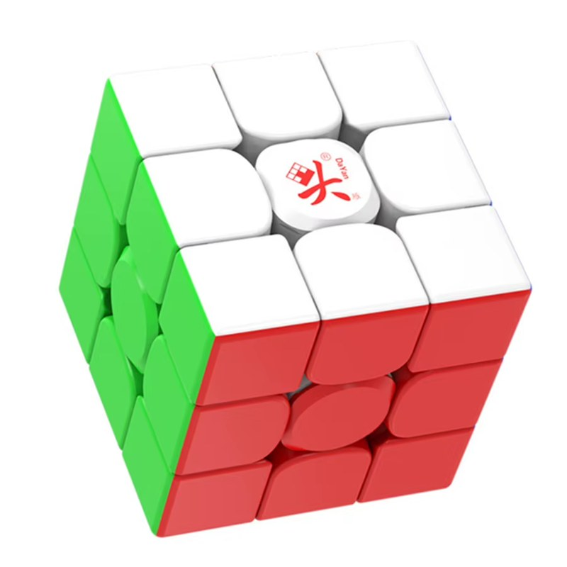

Quel cube acheter ?
Un seul modèle conseillé, et comment éviter de payer la marge d’une boutique.
Les meilleurs cubes sont fabriqués en Chine
Les meilleures marques de speedcubes (MoYu, GAN, Dayan, QiYi…) fabriquent leurs cubes en Chine. La meilleure chose à faire est donc de les commander directement là-bas, sur AliExpress par exemple.
Les boutiques françaises et américaines, elles, achètent ces cubes pour les revendre avec leur marge, et affichent parfois le double du prix d’origine. Pour un cube qui coûte quelques euros à produire, la différence se voit vite.
À savoir avant de commander hors de l’Union européenne. La livraison est plus longue. S’y ajoutent la TVA et, depuis le 1er juillet 2026, un droit de douane forfaitaire de 3 € par produit pour les colis de moins de 150 € (source : Que Choisir). Mieux vaut aussi commander dans la boutique officielle de la marque, pour éviter les contrefaçons.
L’exception : Atoutcubes. Cette boutique française (basée à Bayonne, stock en France) vend le Dayan Guhong à un prix correct, 15,90 € au 25 octobre 2026, avec une livraison en 1 à 3 jours ouvrés. Dans ce cas, passer par elle vaut quand même le coup. Les prix peuvent changer : voir la fiche sur Atoutcubes.
Pour tous les autres cubes : toujours comparer le prix en boutique avec celui d’AliExpress, pour voir si on ne se fait pas arnaquer. Si l’écart est important, mieux vaut le prendre sur AliExpress.
Le cube conseillé : Dayan Guhong M, en MagLev
Un seul cube est conseillé, volontairement : son rapport qualité-prix est dingue, et choisir entre dix modèles ne sert à rien quand l’un d’eux fait déjà tout bien. La version à prendre est la MagLev.

Environ 16 €
- MagLev : 94 aimants et aucun ressort.
- Tension réglable.
- Stickerless, finition brillante.
- Trois tailles : 54, 55 ou 56 mm.
Selon les boutiques, il s’appelle « Guhong Pro M » ou « Guhong Pro+ M » : tant que c’est un Guhong M, c’est le bon. Prix relevé chez Atoutcubes le 25 octobre 2026 (la fiche n’indique pas de prix distinct pour le MagLev). Les caractéristiques viennent de sa fiche.
Magnétique, MagLev… de quoi parle-t-on ?
Quelques mots reviennent dans toutes les fiches de cubes. Les voici en clair.
- Cube magnétique
- Des aimants sont placés dans les pièces. Ils aident chaque face à se caler exactement après un quart de tour, ce qui rend les rotations plus précises.
- Aimants de noyau (core magnets)
- Des aimants situés dans le noyau, au centre du cube, qui retiennent les pièces. Selon les modèles, leur force est réglable : plus elle est élevée, plus le cube « s’accroche » à chaque position.
- Ressorts et compression
- Sur un cube classique, des ressorts maintiennent les pièces ensemble. Les vis règlent la compression : plus elle est forte, plus le cube est serré.
- Tension
- La façon dont les pièces sont tenues entre elles : un cube tendu est plus contrôlable, un cube lâche tourne plus librement mais risque de « popper ». Sur le Guhong, elle se règle avec une molette.
- MagLev (lévitation magnétique)
- Une technologie qui remplace les ressorts par des aimants, qui assurent la compression à leur place. Il y a moins de frottements, donc un cube plus libre et plus rapide. C’est ce qui rend la version MagLev du Guhong si intéressante pour son prix.
Quelle taille choisir ?
La taille ne change pas la qualité du cube, seulement le confort. Le plus simple est de partir de la taille d’un cube qu’on a déjà et qui convient.
54 mm
Le plus compact. Il convient aux petites mains et à la résolution à une main (OH).
55 mm
Le plus polyvalent. En cas de doute, c’est le choix le plus sûr.
56 mm
La taille standard des speedcubes, plus stable dans de grandes mains.
Pour comparer, rien ne vaut de tenir un cube d’un autre membre. Et en cas d’hésitation, la question peut se poser dans #aide.
Les marques en deux mots
- Rubik’s
- La marque que tout le monde connaît, et la pire pour la rapidité : ses cubes sont pensés pour le jeu, pas pour aller vite.
- MoYu
- Le Samsung des Rubik’s cubes : une marque très répandue, avec un modèle pour tous les budgets.
- GAN
- Le Apple des Rubik’s cubes : des cubes très aboutis, mais souvent plus chers.
Aucune autre marque n’est conseillée ici : pour débuter comme pour progresser, le Guhong M en MagLev suffit. Pour tout autre cube, comparer toujours avec le prix d’AliExpress.